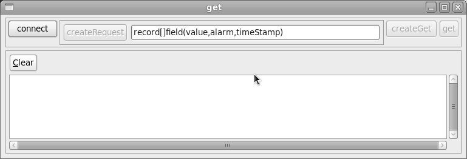
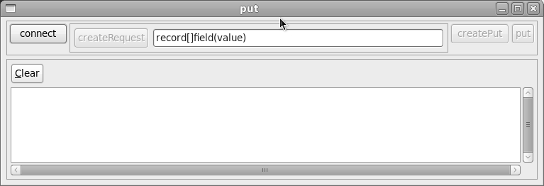
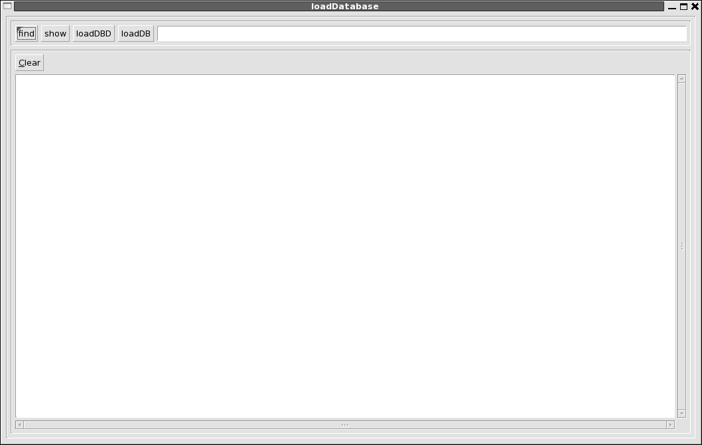
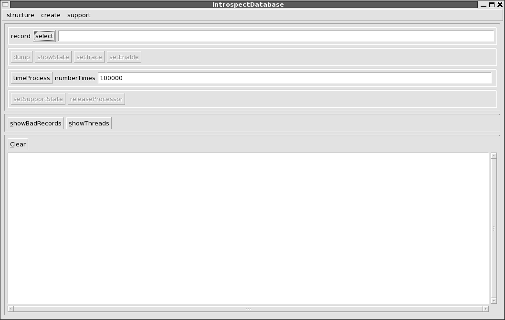

EPICS JavaIOC: swtshell
package: org.epics.ioc.swtshell
2008.08.07
CONTENTS
Overview
This package provides a GUI shell implemented via the SWT toolkit that
comes with eclipse. The default JavaIOC package overview document gives brief
instructions for starting the swtshell. If you want to communicate with a V3
EPICS IOC then the option "-server server/beforeStartIOC.txt" must be given
when the javaIOC is started.
The following window appears when swtshell is started:

The window has the following buttons:
- get, put, process, and monitor:
Each of these brings up another window which provides the ability to
access data via channel access. The next section describes these
windows:
- iocConsole
This provide a window which shows all messages sent to any record of the
local javaIOC. This is shown in a later section.
- loadDatabase and introspectDatabase
Each of these buttons starts another window for interacting with the
local javaIOC. They are described bnelow.
- v3iocshell
The v3iocshell buttom starts a V3 epics ioc that is part of the same
process as the javaIOC. In the future this will be used to communicate
with asynDriver port drivers. For now this button is not documented.
NOTE: After text is typed into any
text input window, the enter key must be pressed.
Channel Access
The get, put, process, and monitor buttons each start a new window. Each
window provides the ability to connect to a PV (Process Variable).
This window gets data from a local or remote IOC. The data is accessed via
javaIOC Channel Access. Two types are implemented:
- javaIOC
For now only local Channel Access is implemented for a javIOC. Thus it
is only possible to pass structured data within a single javaIOC.
- EPICS V3 Channel Access
This can be either a V3 EPICS IOC (or a server implemented via the
portable Channel Access Server) or a javaIOC running the caV3 server.
This means that only the following data can be accessed:
- primitive data
- array of primitive data
- Channel Access V3 properties.
See package org.epics.ioc.caV3 for details about caV3.
get
The following window appears when the get button is pushed:

Note: in order to make a connection
to an EPICS IOC the following is done:
- The caV3 provider is selected.
- The pvname is entered into the pvname box.
- Properties are selected on the third row.
- The connect button on the first row is clicked.
- If connected then the controls on the fourth row are active.
The first row has the following widgets:
- conection status
- This is a message box that shows if get is connected.
- connect button
- This is a toggle button that can issue either a connect or disconnect
request. If it shows "connect" then when it is clicked, get changes the
button to "disconnect" and attempts to connect. The connection status
message box shows if the request is successful. When the button shows
"disconnect" and the button is clicked, get changes the button to
"connect" and disconnects.
- selectLocalRecord
- This brings up a list of all records in the local javaIOC and allows
the user to select a record. When it is selected the pvname on the
second row will change.
- selectLocalField
- If a local record has been selected then the user can click this
button. It brings up a window that has a tree showing all the fields in
the record. Any field can be selected. When a field is selected the
field name is appended to the record name and appears in the pvname on
the second row.
The second row allows the user to select a provider and to specify a
pvname. Currently only two providers are available: local and caV3. The local
provider is just the javaIOC to which swtshell is connected. caV3 is the V3
EPICS Channel Access client (JCA/CAJ) which can commuinicate with V3 EPICS
Channel Access servers. If the local provider is chosen than the user can
select a pvname via the controls on the first row or can enter the pvname
directly. If caV3 is specified then the pvname must be entered direrctly.
A pvname is entered directly by entering the value into the pvname box and
pressing return. The pvname is of the form "record.field".
For javaIOC records field is of the form "name.name..." where where each
name is a field name or a property name. If just the record name is given
then the entire record is selected.
For caV3 records field is a single name. If not specified VAL is assumed.
Both VAL and value mean VAL.
The third row is for caV3. It is used to select caV3 properties that will
be requested via caV3.
After get has connected to a pv, the fourth row is used to request a get.
It has the following controls:
- get
- Each time get is clicked data is read and shown on the message
window.
- process
- If process is selected, then the record will be processed before the
data is read.
- property
- The property button is used to select the set of propertys to get
along with the value.
put
The following window appears when the put button is pushed:

The controls are similar to the controls for get except that no property
buttons are present because put request do not have associated properties.
For a javaIOC record any field, including the entire record can be
selected.
If a primitive or array of primitives is selected then when put is clicked
the following happens:
- A text entry window appears
- After text is entered and the enter key presssed the data is put to the
PV.
If a structured field is chosen and put is clicked the following
happens:
- A window appears that provides a tree structured view of the structure.
Any field of the structure can be selected.
- After clicking the edit button text can be entered in the test window
that appears after the edit button. When the enter key is pressed the
data value is saved.
- When all desired data has been entered the done button is clicked. When
this happens the window disappears and the newly entered data is sent to
the PV.
process
The following window appears when the process button is pushed:

The controls are similar to the controls for get exxept that no controls
are available for properties or fields because they are not meaningful for a
process request.
monitor
The following window appears when the monitor button is pushed:

The controls in the first three rows are identical to the controls for
get. The forth and fifth rows provide options for monitor:
- property
- Selects a set of properties to accompany the data
- deadband
- A deadband to use if onAbsolute or onPercentage are seleccted.
- onPut, ...,onPercentage
- A set of radio buttons that determines the type of change which will
cause a monitor to occur.
iocConsole
The following window appears when the iocConsole button is pushed:

When this is started, it calls iocdb.addRequester where iocdb is the
master IOCDB. Whenever any code sends a message to the iocdb, the message is
displayed on the iocConsole window. Note that iocdb puts the messages on a
queue and has a separate thead that send the messages to the requesters.
Local javaIOC
loadDatabase
The following window appears when the loadDatabase button is pushed:

This is used to load additional Database Definition Database or Record
Instance files to a running IOC. It has the following controls:
- find
- This brings up a file selection box that allows the selection of a
DBD or DB file.
- show
- Lists the selected file.
- loadDBD
- Loads the selected DBD file. If the file loads without error it is
added to the master DBD field.
- loadDB
- Loads, initializes, and starts record instance files. If all of the
new record instances is stated, then the records are added to ther
master database. If any record fails to start, all the records are
uinitialized and are not added to the master database.
introspectDatabase
The following window appears when the introspectDatabase button is
pushed:

Database Definitions
The top menubar allows the use to see all the definitions in the master
DBD database.
Local Record Instance
The second row allows the user to select and interact with a local record.
The select button is used to select a local record. The remaining buttons
apply to the selected button. They are:
- dump
- shows the contents of the record.
- showState
- shows the state of the record.
- setTrace
- Allows the user to set trace on or off.
- setEnable
- Allows the use to set the enable state on or off.
- setSupportState
- Allows the use to issue a support state method, i.e. initialize,
start, stop, or uninitialize.
- releaseProcessor
- Allows the use to force the release of the current record processor.
This is a dangorous operation!!
Show Information
The third row has two buttons that show information. They are:
- showBadRecords
- Show all records that havesomething out of ordinary. For example
disabled, in alarm state, active, not ready.
- showThreads
- Shows all threads created via the thread utilities in package
org.epics.ioc.util.